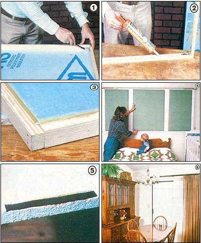

We'd like to share with you two (more) economical ways to reduce window heat loss.
You may recall that in the last issue of this publication (see "The Homemade Thermal Shade" on page 182 of MOTHER NO. 84) we presented three varieties of fabric thermal shades, all of which rang in at about $10 a window. (In case you missed that heat-saving advisory, we should tell you that the price is very modest: Commercial window insulators can cost $90 or more!) Well, in this installment, we're going to present two other methods of insulating your home's portholes that are particularly good for covering large expanses of glazing. And in keeping with our previous models, these heat-holding panels can be made for little more than $10 a window.
Our shutters are primarily composed of expanded polystyrene insulation, a foamlike material that comes in 4' X 8' sheets and is often used in the building trades. "Beadboard", as it's known, is rigid yet light in weight and easy to work with. It makes a durable, inexpensive, and simple-to-install thermal shutter. Polystyrene is rated at R-4 to R-5 per inch (so in the case of the 1-1/2"-thick pop-in shutters detailed below, the insulative value would be about R-7).
MOM's thermal panels are pretty much of the "generic" variety, but you can fancy up these no-frills shutters with paint, fabric, or wallpaper if you like. The foam panels may be left in the windows to forestall heat loss both day and night . . . or you can remove the cover-ups (which obviously do block out light) to let in the sun's rays during the day. If you decide to keep the shutters in the windows for long periods of time, you should check occasionally for mold or mildew caused by condensation of moisture. Wiping off window surfaces with a dry cloth and dabbing diluted chlorine bleach on the sills can help prevent such problems.
COVER-UP NO. 1:
THE POP-IN SHUTTER
Our first thermal project this go-around was designed for a 3' by 7' expanse of glass that included one 32" X 36" unit and two 23" X 36" windows. To cloak these panes, we decided to make three pop-in shutters . . . beadboard blocks lodged in a wooden frame and wedged in the window. The sills and casings we worked with had adequate depth to accommodate our shades, but you could insert the panels in a window without a casing-such as those found in a mobile home or on a brick or stone-veneered wall-if you mounted an exterior frame around the window first.
For the three window coverings, we purchased five 8' lengths of 1 X 2 fir (at a total cost of $9.60) and two sheets of 3/4" polystyrene at $8.29 per sheet. Thus, the cost of the basic materials came to $8.73 per window . . . and there was enough lumber and headboard left over to cover at least one more window. We also used four 2-1/2" inside corner braces ($1.79 per package of four) and one tube of Quick Bond Panel and Foam Adhesive ($1.39) to complete each window. (Of course, you can use a different kind of glue than the one we chose. If you do, be sure to spot-test it first on some polystyrene to make certain it doesn't damage the beadboard.) That brought the total cost for each of the three thermal shutters to $11.91.
It took us a little less than two hours to put together our first insulative panel, but-with some experience-you could easily shave time off that figure.
MAKING A SANDWICH
To make a pop-in shutter, measure the window you want to cover. Originally, we intended to treat our entire expanse of one large picture windowpane and two double-hung units with one shutter . . . but we discarded this idea because of the unwieldiness and weight of a thermal covering that large. The smaller panels we settled for produced one unexpected bonus: They can be put in place without disturbing the existing draperies.
If your own windows stand perfectly true and square, sizing the frames will be a breeze. Otherwise, to custom-fit the framing strips, first measure the opening from side to side and cut two wood pieces to fit, using either a handsaw or a circular saw. Then stack these two members on top of each other on the windowsill, and measure the interior vertical gap to size the remaining two framing strips. You can recheck the fit after you've cut the wood by wedging the members in on top of the stacked pieces and adjusting as necessary. If there are differences in those measurements, mark the strips "top", "bottom", and "side".
After that's done, take the strips to a level workspace such as a bench or a concrete floor to lay out and assemble the frame. We used 1-1/4" 3d finishing nails to secure our strips, then reinforced each right angle with an inset corner brace. (Hint: It's easier to insert the screws in the corner braces if you first rub a little soap on them.)
Next, take the finished frames and recheck their fit in the window, using a wood file to smooth off any still-tight places. After setting a frame on the polystyrene, scribe the inner dimensions of the wood onto the beadboard with a marking pen. Cut out the foam block with a long-bladed utility knife. Then flip the frame over, draw another rectangle on a second section of foam, and cut it out. Mark the position of the two foam blocks for future reference ("top", "bottom", "facing into the frame", and so forth).
If you used corner braces, you'll need to bevel the inside corners of the polystyrene pieces a bit so that the blocks will fit snug against the braces. Once you're satisfied with how the beadboards fit, take them out and apply the adhesive in a swirl pattern to the interior surfaces of the foam sections . . . and run several additional beads of the adhesive along the inside of the frame. Then press the two pieces of foam gently to spread the glue around.
Now, pull the polystyrene sections apart, add glue to any dry spots (your glue may need to "cure" a bit before final sealing), and place them in the frame. To form a tight seal, run some last beads of adhesive around the edges of the frame where they're butted by the polystyrene. You can then lay the assembly flat on a floor or workbench and weight it with a moderately heavy object until the panel is dry.
Our pop-ins fit snug enough to stay in our windows without any additional fastening. However, if your thermal shutters are a tad loose, it might be a good idea to fasten hardware-store turn buttons in several spots around the edge of the window frame to hold in the polystyrene panes.
We finished the insulative shutters with a coat of leftover latex paint (don't use an oil based one, since it might harm the foam). You can put several posters on yours . . . for a kind of "gallery" effect, or, if you're willing to invest a few more dollars, you can decorate the polystyrene with a cloth covering or glue some wallpaper over it. And, of course, the inserts may be left unadorned, particularly if you'll be covering them with curtains.
COVER-UP NO. 2:
BEADBOARD PANELS
Probably the biggest "energy thief" in American homes and apartments is the sliding glass door. Happily, though, its correction is one of the simplest and least expensive home fix-its you can perform to save a few bucks on your heating bill.
All you'll need is a piece of 3/4" X 4' X 8' headboard for each glass door panel you plan to protect . . . 36 six-inch-long magnetic strips (these can be salvaged from the self-sealing gaskets in junked refrigerators) . . . and a tube of 3M Super Weatherstrip Adhesive (Part No. 08001), which can be purchased at a hardware or auto parts store. Again, spot-check to make sure the adhesive won't melt your foam before making widespread use of the product.
To make your panel, simply measure the height and width of each glass door frame-right to the outer edges-and cut the insulation boards to these dimensions. Cover not just the glass itself but as much of its aluminum casing as possible, since the metal transfers heat to the outdoors, too. Even if you own a wood-cased door, it's a good idea to cover the frame. The air space thus formed between the pane and the headboard adds to the cover's insulative effect.
Once the panel is trimmed to size (you did make snug cutouts for handles, latches, or anything else that would prevent the sheet from fitting flush against the frame, right?), go on to glue half (18) of your salvaged magnetic strips to the door's framework . . . placing six at either side of each large glass pane, plus three at the top and three at the bottom.
Next, take a soft-lead pencil and coat the face of each strip with graphite, then position the polystyrene sheet in place over the frame so that the board picks up the pencil marks at each magnet's location.
Now, using a single-edged razor or a small utility knife, cut a channel at each smudge spot and cement the remaining 18 magnetic strips so that they'll serve as mates to those on the door. Remember that, in order to make the panel fit flush against the frame, each pocket must be twice as deep as the thickness of one strip.
Your heat-stopping device is now ready to install. As with the pop-in models, you can jazz up these $10 wonders with decorative fabric, wallpaper, or a latex-based paint.
Whatever route you choose to limit the heat loss from your home's glazing, remember to store the polystyrene panels carefully during warmer weather. Don't expose the cover-ups to dampness, and set them away from high temperatures to prevent them from becoming warped. Then they'll be as good as new next year, when it's time again for those annual chores of getting in the wood, raking up the leaves . . . and putting in the thermal shades!
|
 COVER-UP NO. 1, THE POP-IN SHUTTER: [1]After assembling a wooden frame to fit your window, lay it on a sheet of insulation so you can mark and cut out the beadboard. Do this again with another piece of insulation so that the shutter will be two layers thick. [2] Once you've thoroughly glued the two sections of beadboard together, run some additional adhesive along the inside of the frame. [3] A completed, airtight corner. [4] The final product is easy to install . . . attractive . . . and very inexpensive! COVER-UP NO. 2, A BEADBOARD PANEL: [5] This large, unframed heat holder is held in place by salvaged magnetic strips that have been glued into channels along the insulation. [6] A completed panel will help keep Old Man Winter from knocking on your glass doors! |
|
|